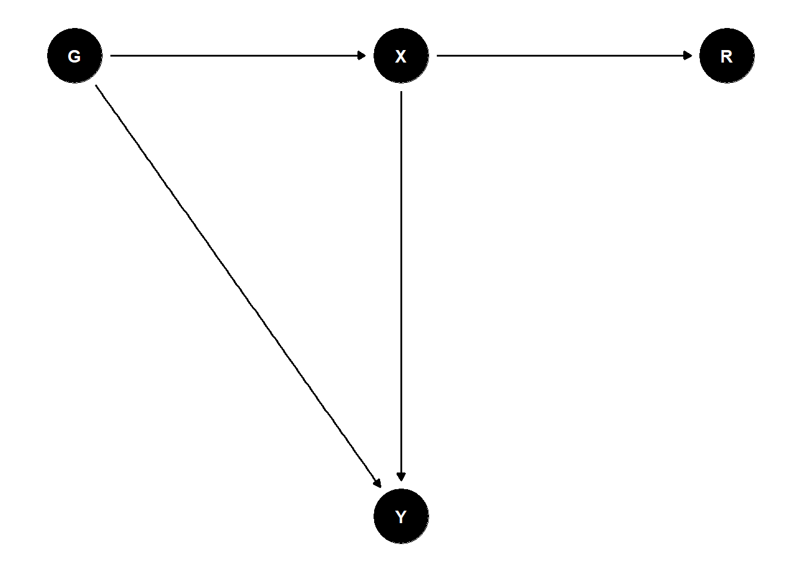
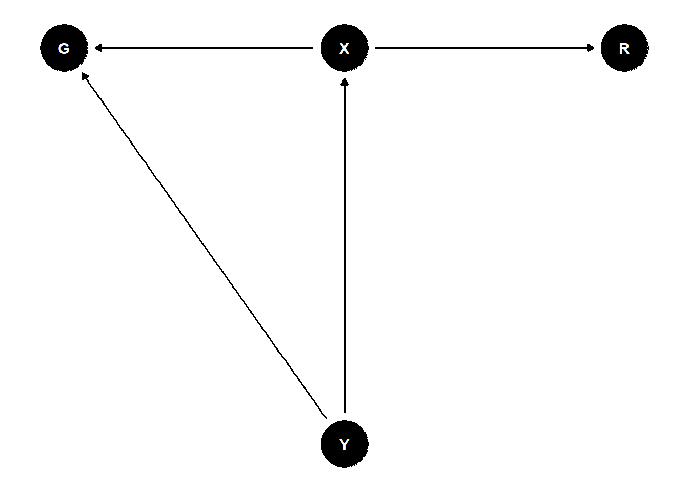

Ingen ram över domäner: ett problem?
Analytisk klarhet
Representativitet
Bortfall
Hjälpinformation
DAG
Abstract
Domänanalyser är vanliga i surveyundersökningar, men ofta saknas information om domänens storlek eller sammansättning i populationen. Betyder det att representativa skattningar är omöjliga? I detta inlägg diskuteras hur kraven för att skatta gruppstorlekar skiljer sig från kraven för att skatta domänmedelvärden, och varför samma hjälpinformation kan vara tillräcklig för det ena men inte det andra.
När domänen inte finns identifierad i ramen – är det verkligen ett problem?
I surveyundersökningar vill vi ofta beskriva grupper som inte identifierades när urvalet drogs.
Det kan exempelvis handla om:
- personer med en viss sjukdom,
- arbetslösa,
- personer med facklig anslutning,
- personer med låg tillit till samhället.
Sådana grupper brukar kallas domäner.
Ofta har undersökningen inte utformats specifikt för att beskriva just dessa grupper. Urvalet har dragits från hela populationen och bortfallsjusteringar eller kalibreringar har gjorts mot kända totaler på populationsnivå.
Ibland kan vi inte ens identifiera domänen i ramen. Vi vet då varken hur stor gruppen är eller hur den fördelar sig med avseende på olika bakgrundsvariabler.
Ändå vill vi gärna beskriva storheter som
\[ E(Y\mid G=1) \]
där \(G=1\) anger att individen tillhör domänen.
En spontant tanke kanske är:
Om vi inte vet hur stor gruppen är i populationen, hur kan vi då dra slutsatser om den?
Det låter rimligt.
Men frågan visar sig vara mer subtil än så.
Är det verkligen domänen som driver bortfallet?
Anta att personer i domänen svarar mer sällan än övriga populationen. En rimlig tanke är då att grupptillhörigheten påverkar svarssannolikheten.
Men det behöver inte vara sant.
Anta istället att personer i domänen i genomsnitt är yngre, har lägre utbildning och lägre inkomster. Låt dessa variabler sammanfattas av \(X\). Då kanske det är \(X\) som driver bortfallet genom: \[G \rightarrow X \rightarrow R\] eller \[G \leftarrow X \rightarrow R\] Domäntillhörigheten blir då associerad med bortfallet därför att grupperna har olika fördelningar av \(X\), inte därför att grupptillhörigheten i sig påverkar svarssannolikheten.
Det som ser ut som ett domänspecifikt bortfall kan alltså i själva verket vara ett bortfall som drivs av variabler som redan finns tillgängliga som hjälpinformation. I realiteten kan så klart svarssannolikheterna påverkas av en kombination mellan dessa faktorer och grupptillhörighet.
Men observationen är viktig eftersom den öppnar upp möjligheten att problemet kanske inte handlar om domänen i sig utan om att andra variabler kanske faktiskt driver selektionen, om inte annars delvis.
Vad krävs för att identifiera ett domänmedelvärde?
Låt oss fokusera på
\[P(Y∣G=1)\]
Om vi kan identifiera denna fördelning kan vi också identifiera exempelvis
\[E(Y∣G=1)\]
Vid första anblick kan man skriva
\[P(Y∣G=1)=\sum_x P(Y∣X=x,G=1)P(X=x∣G=1)\]
Det uttrycket visar att domänmedelvärdet beror både på hur utfallet varierar inom domänen och hur domänen är sammansatt med avseende på \(X\).
Men uttrycket leder också till ett problem.
Vi känner normalt inte till \[P(X∣G=1)\]
Det är ju just domänens sammansättning som saknas när domänen inte finns identifierad i ramen. Det kan därför verka som att problemet inte går att lösa. Men det finns ett annat sätt att angripa frågan.
Ett alternativt sätt att skriva problemet
Med Bayes regel gäller
\[P(Y∣G=1)=\frac{P(Y,G=1)}{P(G=1)}\]
Problemet reduceras alltså till att identifiera två storheter:
\[P(Y,G=1)\]
och
\[P(G=1)\]
Nu kan vi använda lagen om total sannolikhet:
\[P(Y,G=1)=\sum_xP(Y,G=1∣X=x)P(X=x)\]
samt
\[P(G=1)=\sum_x P(G=1∣X=x)P(X=x)\]
Här händer något intressant. Domänens okända fördelning
\[P(X∣G)\]
har försvunnit.
Istället behöver vi bara känna till populationens fördelning av hjälpinformationen
\[P(X)\]
vilket ofta är precis den information som finns tillgänglig via register eller används vid kalibrering.
Vad behöver vi kunna lära oss från respondenterna?
Om vi antar
\[(Y,G)⊥R∣X\]
Detta innebär att när vi väl känner till \(X\) ger svarsindikatorn \(R\) ingen ytterligare information om vare sig utfallet \(Y\) eller domäntillhörigheten \(G\).
Under detta antagande gäller
\[P(Y,G∣X,R=1)=P(Y,G∣X)\]
samt
\[P(G∣X,R=1)=P(G∣X)\]
Båda storheterna kan alltså skattas från respondenterna.
Om vi dessutom känner
\[P(X)\]
från register eller kalibreringsinformation kan vi nu skatta vår storhet
\[P(Y∣G=1)=\frac{\sum_xP(Y,G=1∣X=x)P(X=x)}{\sum_x P(G=1∣X=x)P(X=x)}\]
Vi har alltså lyckats uttrycka målstorheten med hjälp av:
information från respondenterna, populationens fördelning av \(X\).
Vi behöver däremot inte känna till
\[ P(X\mid G). \] ## Nu börjar det se ut som surveyinferens
Uttrycket ovan är egentligen bara en kvot.
Täljaren beskriver hur många personer i populationen som både tillhör domänen och har egenskapen \(Y\).
Nämnaren beskriver hur många personer som tillhör domänen.
Samma logik återkommer i den klassiska domänskattaren:
\[ \hat{\bar{Y}}_G=\frac{\sum_iW_iY_iG_i}{\sum_iw_iG_i} \]
Skillnaden är bara att vi här har härlett den från sannolikheter.
Det gör också tydligt varför hjälpinformation om populationens fördelning av \(X\) kan vara tillräcklig även när domänens egen fördelning är okänd. Om ovan nämnda antagande håller.
Vad gör egentligen kalibreringen?
Kalibrering beskrivs ofta som en metod för att justera vikter.
Men ur ett sannolikhetsperspektiv gör den något mer fundamentalt.
Den ger oss information om \[P(X)\] Om åldersfördelningen, utbildningsfördelningen eller regionfördelningen är känd i populationen kan denna information användas för att säkerställa att analyserna bygger på rätt fördelning av de variabler som driver selektionen.
Kalibreringen försöker alltså inte göra domänen lik populationen.
Den försöker inte heller återskapa domänens sammansättning.
Det den gör är att tillföra information om den del av problemet som vi faktiskt känner till.
Ett illustrativt exempel
Anta att:
- \(G=1\) = personer med låg tillit till samhället.
- \(Y\) = förtroende för myndigheter.
- \(X\) = ålder, utbildning och inkomst.
- \(R\) = svar på undersökningen.
Vi observerar att personer med låg tillit svarar mer sällan.
Den spontana tolkningen är då: > Domäntillhörigheten verkar påverka bortfallet.
Men kanske är det egentligen så att personer med låg tillit i genomsnitt är yngre och har lägre utbildning, samtidigt som yngre personer och personer med lägre utbildning svarar mer sällan.
Då skulle mekanismen kunna se ut som:
eller

Här är det inte \(G\) som driver bortfallet. Det är \(X\).
När vi jämför personer med samma ålder, utbildning och inkomst finns ingen ytterligare skillnad i svarssannolikhet mellan domänen och resten av populationen.
Det är precis innebörden av
\[(Y,G)⊥R∣X\] Antagandet innebär att bortfallet blir ignorerbart när vi väl har kontrollerat för de variabler som faktiskt skapar selektionen.
Kärninsikten
När vi analyserar en domän utan kända domäntotaler är den centrala frågan inte:
Är gruppen representativ?
Den centrala frågan är:
Vilken information behöver identifieras för att kunna skatta den storhet vi är intresserade av?
För domänmedelvärden visar analysen ovan att problemet i grunden handlar om två saker:
- hur utfallet varierar givet \(X\) och domäntillhörighet,
- hur domänen fördelar sig över \(X\).
Om vi kan anta att både utfall och domäntillhörighet är oberoende av svarsmekanismen givet \(X\), och samtidigt känner populationens fördelning av \(X\), blir båda dessa komponenter identifierbara.
Det är därför domänanalyser ibland är möjliga även när vi inte känner vare sig domänens storlek eller dess sammansättning i populationen.